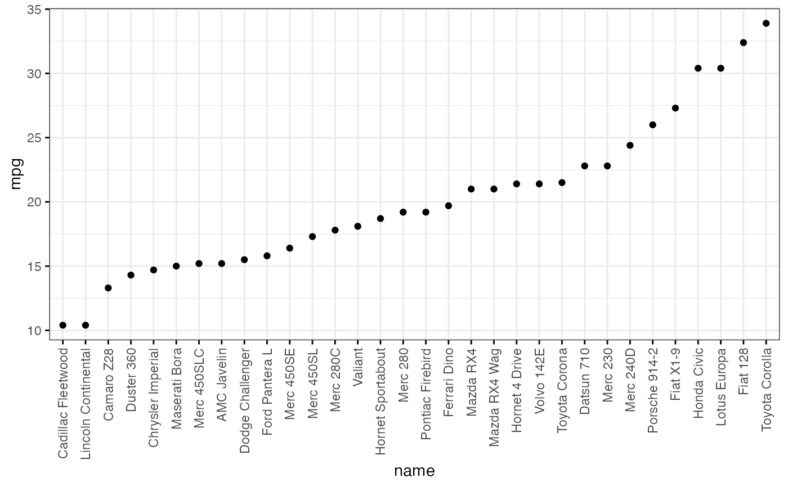
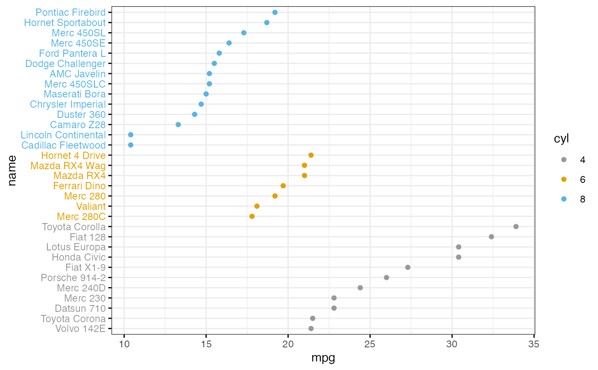
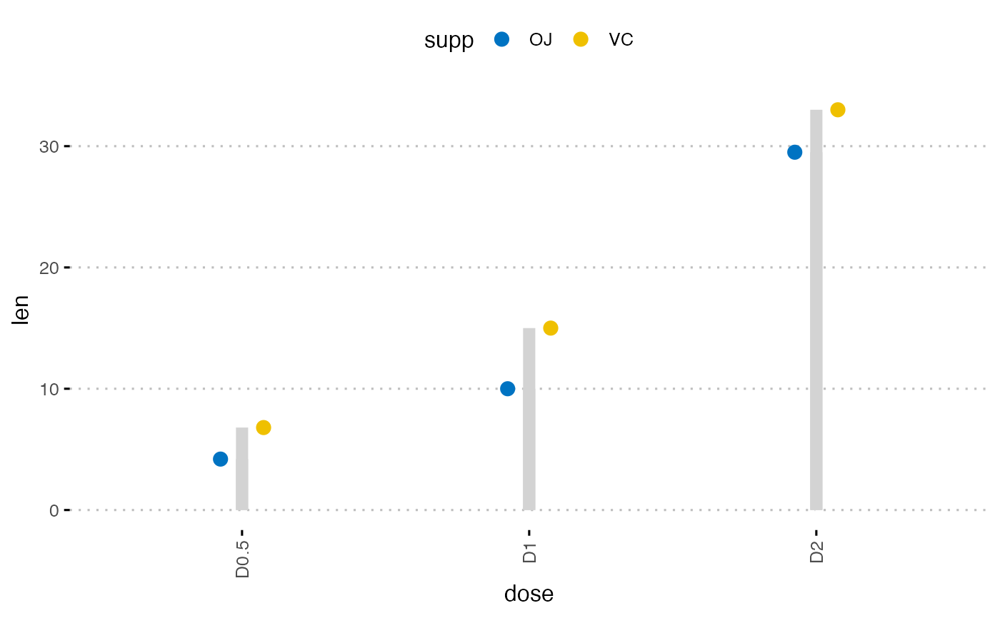

Draw a Cleveland dot plot.
Usage
ggdotchart(
data,
x,
y,
group = NULL,
combine = FALSE,
color = "black",
palette = NULL,
shape = 19,
size = NULL,
dot.size = size,
sorting = c("ascending", "descending", "none"),
add = c("none", "segment"),
add.params = list(),
x.text.col = TRUE,
rotate = FALSE,
title = NULL,
xlab = NULL,
ylab = NULL,
facet.by = NULL,
panel.labs = NULL,
short.panel.labs = TRUE,
select = NULL,
remove = NULL,
order = NULL,
label = NULL,
font.label = list(size = 11, color = "black"),
label.select = NULL,
repel = FALSE,
label.rectangle = FALSE,
position = "identity",
ggtheme = theme_pubr(),
...
)
theme_cleveland(rotate = TRUE)Arguments
- data
a data frame
- x, y
x and y variables for drawing.
- group
an optional column name indicating how the elements of x are grouped.
- combine
logical value. Default is FALSE. Used only when y is a vector containing multiple variables to plot. If TRUE, create a multi-panel plot by combining the plot of y variables.
- color, size
points color and size.
- palette
the color palette to be used for coloring or filling by groups. Allowed values include "grey" for grey color palettes; brewer palettes e.g. "RdBu", "Blues", ...; or custom color palette e.g. c("blue", "red"); and scientific journal palettes from ggsci R package, e.g.: "npg", "aaas", "lancet", "jco", "ucscgb", "uchicago", "simpsons" and "rickandmorty".
- shape
point shape. See
show_point_shapes.- dot.size
numeric value specifying the dot size.
- sorting
a character vector for sorting into ascending or descending order. Allowed values are one of "descending", "ascending" and "none". Partial match are allowed (e.g. sorting = "desc" or "asc"). Default is "descending".
- add
character vector for adding another plot element (e.g.: dot plot or error bars). Allowed values are one or the combination of: "none", "dotplot", "jitter", "boxplot", "point", "mean", "mean_se", "mean_sd", "mean_ci", "mean_range", "median", "median_iqr", "median_hilow", "median_q1q3", "median_mad", "median_range"; see ?desc_statby for more details.
- add.params
parameters (color, shape, size, fill, linetype) for the argument 'add'; e.g.: add.params = list(color = "red").
- x.text.col
logical. If TRUE (default), x axis texts are colored by groups.
- rotate
logical value. If TRUE, rotate the graph by setting the plot orientation to horizontal.
- title
plot main title.
- xlab
character vector specifying x axis labels. Use xlab = FALSE to hide xlab.
- ylab
character vector specifying y axis labels. Use ylab = FALSE to hide ylab.
- facet.by
character vector, of length 1 or 2, specifying grouping variables for faceting the plot into multiple panels. Should be in the data.
- panel.labs
a list of one or two character vectors to modify facet panel labels. For example, panel.labs = list(sex = c("Male", "Female")) specifies the labels for the "sex" variable. For two grouping variables, you can use for example panel.labs = list(sex = c("Male", "Female"), rx = c("Obs", "Lev", "Lev2") ).
- short.panel.labs
logical value. Default is TRUE. If TRUE, create short labels for panels by omitting variable names; in other words panels will be labelled only by variable grouping levels.
- select
character vector specifying which items to display.
- remove
character vector specifying which items to remove from the plot.
- order
character vector specifying the order of items.
- label
the name of the column containing point labels.
- font.label
a list which can contain the combination of the following elements: the size (e.g.: 14), the style (e.g.: "plain", "bold", "italic", "bold.italic") and the color (e.g.: "red") of labels. For example font.label = list(size = 14, face = "bold", color ="red"). To specify only the size and the style, use font.label = list(size = 14, face = "plain").
- label.select
can be of two formats:
a character vector specifying some labels to show.
a list containing one or the combination of the following components:
top.upandtop.down: to display the labels of the top up/down points. For example,label.select = list(top.up = 10, top.down = 4).criteria: to filter, for example, by x and y variabes values, use this:label.select = list(criteria = "`y` > 2 & `y` < 5 & `x` %in% c('A', 'B')").
- repel
a logical value, whether to use ggrepel to avoid overplotting text labels or not.
- label.rectangle
logical value. If TRUE, add rectangle underneath the text, making it easier to read.
- position
Position adjustment, either as a string, or the result of a call to a position adjustment function.
- ggtheme
function, ggplot2 theme name. Default value is theme_pubr(). Allowed values include ggplot2 official themes: theme_gray(), theme_bw(), theme_minimal(), theme_classic(), theme_void(), ....
- ...
other arguments to be passed to
geom_pointandggpar.
Details
The plot can be easily customized using the function ggpar(). Read ?ggpar for changing:
main title and axis labels: main, xlab, ylab
axis limits: xlim, ylim (e.g.: ylim = c(0, 30))
axis scales: xscale, yscale (e.g.: yscale = "log2")
color palettes: palette = "Dark2" or palette = c("gray", "blue", "red")
legend title, labels and position: legend = "right"
plot orientation : orientation = c("vertical", "horizontal", "reverse")
Examples
# Load data
data("mtcars")
df <- mtcars
df$cyl <- as.factor(df$cyl)
df$name <- rownames(df)
head(df[, c("wt", "mpg", "cyl")], 3)
#> wt mpg cyl
#> Mazda RX4 2.620 21.0 6
#> Mazda RX4 Wag 2.875 21.0 6
#> Datsun 710 2.320 22.8 4
# Basic plot
ggdotchart(df,
x = "name", y = "mpg",
ggtheme = theme_bw()
)

# Change colors by group cyl
ggdotchart(df,
x = "name", y = "mpg",
group = "cyl", color = "cyl",
palette = c("#999999", "#E69F00", "#56B4E9"),
rotate = TRUE,
sorting = "descending",
ggtheme = theme_bw(),
y.text.col = TRUE
)

# Plot with multiple groups
# +++++++++++++++++++++
# Create some data
df2 <- data.frame(
supp = rep(c("VC", "OJ"), each = 3),
dose = rep(c("D0.5", "D1", "D2"), 2),
len = c(6.8, 15, 33, 4.2, 10, 29.5)
)
print(df2)
#> supp dose len
#> 1 VC D0.5 6.8
#> 2 VC D1 15.0
#> 3 VC D2 33.0
#> 4 OJ D0.5 4.2
#> 5 OJ D1 10.0
#> 6 OJ D2 29.5
ggdotchart(df2,
x = "dose", y = "len",
color = "supp", size = 3,
add = "segment",
add.params = list(color = "lightgray", linewidth = 1.5),
position = position_dodge(0.3),
palette = "jco",
ggtheme = theme_pubclean()
)
